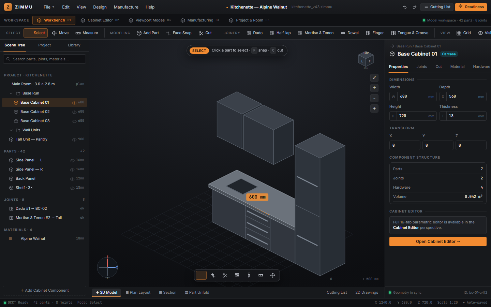

CONCEPT A01 / WORKBENCH
Three-Column Workbench
Classic CAD / DCC paradigm · persistent panels
Fully built out: five perspectives in one file — Workbench, 16-tab Cabinet Editor, Viewport Modes, Manufacturing dashboard and Project & Room. Every tool and piece of information stays visible, optimized for maximum efficiency and keyboard-driven workflow.
Highest information densityKeyboard-first16-tab cabinet editor12 interaction modes8 manufacturing workflows
Deep links:
Open Concept A
a-workbench.html#view=cabinet · #view=modes · #view=manufacture · #view=project